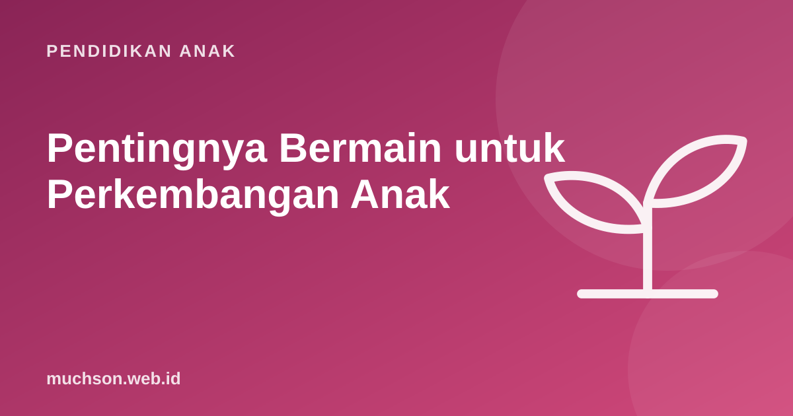

Beranda › Artikel › Pendidikan Anak
Pendidikan AnakPentingnya Bermain untuk Perkembangan Anak
Di tengah les, PR, dan target akademik, waktu bermain anak sering dianggap kurang penting. Padahal American Academy of Pediatrics menyebut bermain bukan kegiatan sepele, melainkan cara utama anak belajar dan membangun otaknya. Artikel ini menjelaskan apa yang terjadi saat anak bermain, jenis-jenis bermain, dan cara melindunginya.

Bermain adalah pekerjaan anak
Dalam laporan klinis "The Power of Play" (2018), American Academy of Pediatrics (AAP) menjelaskan bahwa bermain mendukung perkembangan otak, kemampuan bahasa, keterampilan sosial dan emosional, fungsi eksekutif, serta mengurangi stres. Laporan itu bahkan menganjurkan dokter anak "meresepkan" bermain dalam kunjungan rutin.
Bermain yang dimaksud bukan sekadar hiburan. Ciri-cirinya: dilakukan karena ingin (bukan karena disuruh), menyenangkan, aktif, sering melibatkan imajinasi, dan anak bebas mencoba tanpa takut salah.
Apa yang dilatih saat anak bermain?
| Saat anak ... | Ia sedang melatih ... |
|---|---|
| Bermain peran jadi penjual dan pembeli | Bahasa, berhitung, empati, aturan sosial |
| Menyusun balok setinggi mungkin | Pemecahan masalah, keseimbangan, ketekunan |
| Main petak umpet | Pengendalian diri, perencanaan, aturan |
| Bermain di luar, memanjat, berlari | Motorik, kekuatan, menilai risiko |
| Membuat dunia khayalan dengan teman | Kreativitas, negosiasi, kerja sama |
| Bermain papan atau kartu | Strategi, menunggu giliran, menerima kalah |
Permainan dengan aturan, seperti petak umpet atau "lampu merah, lampu hijau", sangat baik untuk fungsi eksekutif: anak harus mengingat aturan, menahan dorongan, dan menyesuaikan diri saat aturan berubah.
Jenis-jenis bermain
Bermain terbimbing menarik untuk orang tua. Penelitian Weisberg, Hirsh-Pasek, dan rekan menggambarkannya sebagai jalan tengah antara bermain bebas dan pelajaran langsung: orang dewasa menyiapkan lingkungan dan tujuan belajar, tetapi anak yang memimpin eksplorasi. Contohnya menyiapkan timbangan dan berbagai benda, lalu bertanya "mana yang lebih berat menurutmu?" tanpa memberi jawabannya.
Ancaman bagi waktu bermain
- Jadwal terlalu padat. Sekolah, les, dan PR tidak menyisakan waktu bebas.
- Layar menggantikan bermain. Terutama tontonan pasif.
- Kekhawatiran berlebihan. Anak jarang dibiarkan bermain di luar.
- Anggapan bermain = tidak produktif. Padahal justru di sanalah banyak keterampilan tumbuh.
Cek waktu bermain anak
Cara memberi ruang bermain
- Jadwalkan waktu kosong. Kedengarannya aneh, tetapi blok waktu tanpa agenda memberi ruang bermain bebas.
- Sediakan bahan terbuka. Kardus, balok, kertas, kain, tanah liat. Benda yang bisa menjadi apa saja memancing imajinasi.
- Biarkan bosan sebentar. Rasa bosan sering menjadi awal ide bermain yang kreatif.
- Ikut bermain tanpa memimpin. Biarkan anak menentukan aturan dan ceritanya.
- Ke luar rumah. Taman, halaman, lapangan. Bermain di luar melatih tubuh dan memberi pengalaman yang tidak ada di dalam ruangan.
Bermain dan belajar bisa menyatu
Belajar terbaik bagi anak sering terasa seperti bermain: ada pilihan, tantangan, dan kesempatan mencoba tanpa takut salah. Mitchel Resnick dari MIT, pencipta Scratch, menyebut empat unsur kreativitas: projects, passion, peers, play. Coding yang baik untuk anak dirancang dengan semangat yang sama. Coba lihat sendiri lewat pelajaran gratis PixelKode, lalu tetap sisakan waktu bermain di luar layar.
Tanya jawab
Kenapa bermain penting untuk anak?
Berapa lama anak sebaiknya bermain setiap hari?
Apakah main game termasuk bermain?
Apa itu bermain terbimbing?
Sumber dan bacaan lanjut
- Yogman, M. dkk. (2018). The Power of Play: A Pediatric Role in Enhancing Development in Young Children. Pediatrics
- Weisberg, D. S. dkk. (2016). Guided play: Principles and practices. Current Directions in Psychological Science
- Harvard Center on the Developing Child: Executive Function
- WHO (2019). Pedoman aktivitas fisik dan tidur anak di bawah 5 tahun